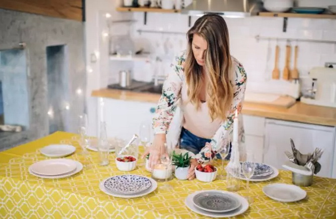
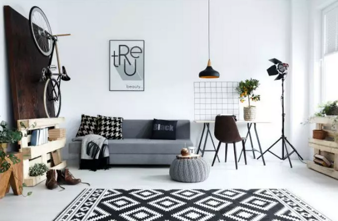
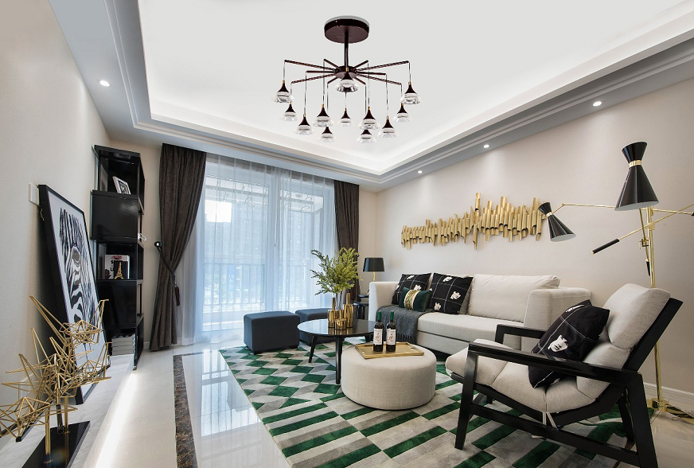
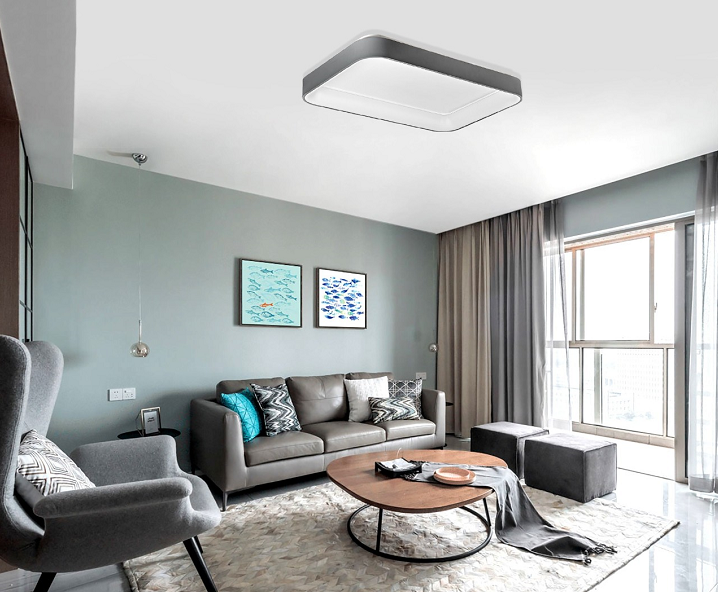
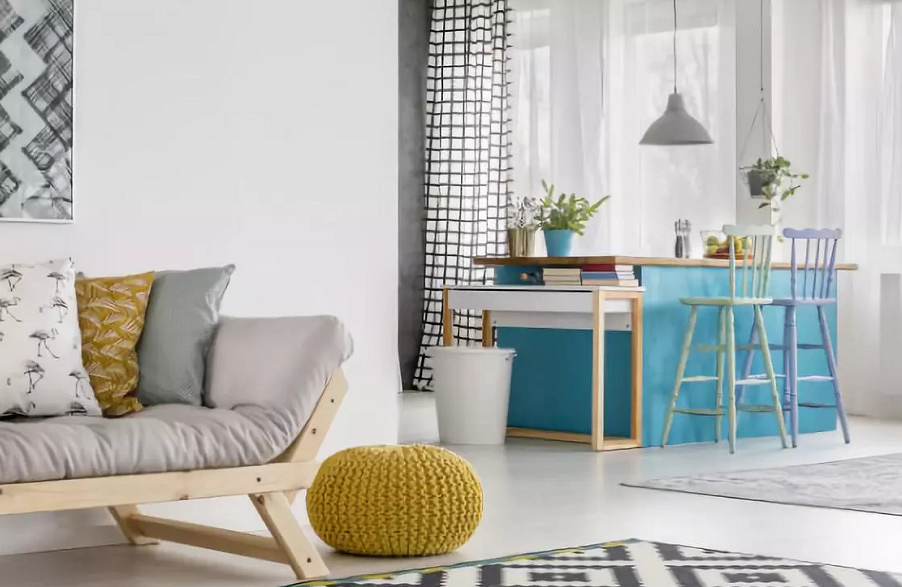
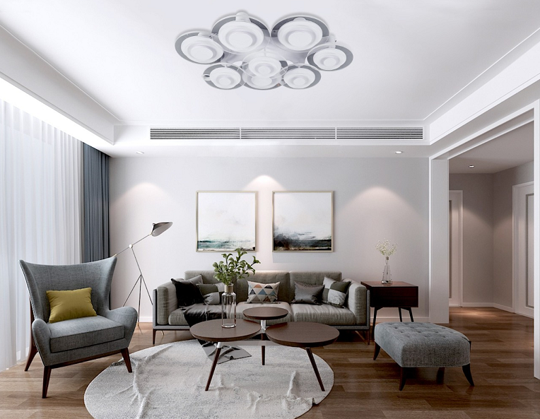
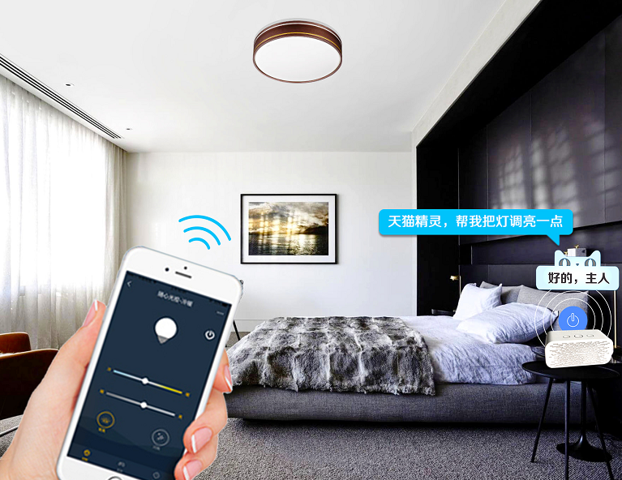
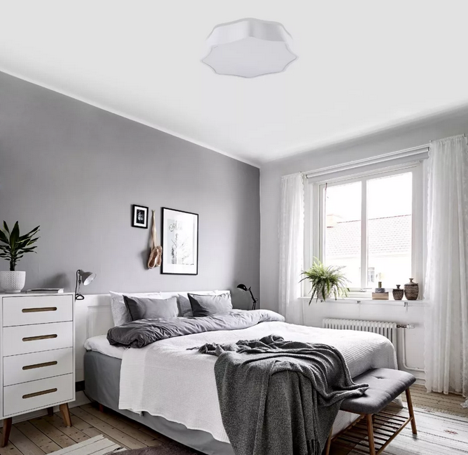
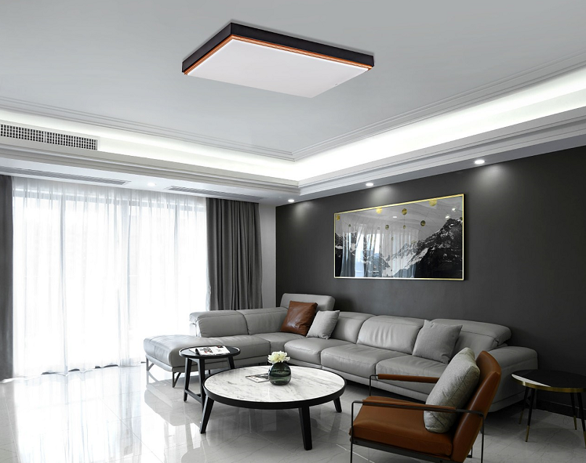

2018.09.10 伯克利 精致生活
“生存”与“生活”看似只有一字之差，却隐藏着我们对待生活的态度。
苏格拉底曾注解说：“他人为食而生，我为生而食。”英国亦有谚语：“为活而吃，别为吃而活。”显然，吃是为了生存，而生活却不只是为了吃，则是更精致的生活享受。

在现实中，每个人都想装扮自己，无论是外在或内心，都想受到关注，得到认可。而大多数人迫于生存、压力等因素，常年在外奔波、打拼，而忘了最初的初衷，忘了生活原该有的样子，更忘了家是什么样的感觉？
人们逐渐被现实所蒙惑，习惯性把简单事情复杂化，混淆“生存”与“生活”的关系，这就需要我们即可反思，端正生活态度。
当不能改变社会环境的时候，我们可以尝试去改变自己的家。用发现美的眼睛与单纯的心打造一个健康、舒适、自由、精致的家。

在很多人看来，精致生活一定很贵，其实不然。精致生活更多是注重生活的微小细节，通过一些简单常用家居软装也可以搭配出高逼格、设计感的家居环境。

伯克丽现代简约吸顶灯 追忆系列
墙面
墙面是家居空间中面积最大的区域，大多数人往往会忽略这个方面。选一款平价环保无甲醛的涂料，合理将色彩运用于墙面，不仅可以点亮家居空间，打破日常的单调，更能拨动你跳动的心弦，给生活增添一抹“色彩”。

伯克丽现代简约吸顶灯陶醉系列
摆件
为家选购一些色彩鲜活的抱枕、移动小坐凳，不仅能满足家居功能需求，还能提升家居活力，搭配几株小盆栽，更能增添生机，休养身心。

家具
家具应选择几何线条的现代设计，简洁又不失品味，搭配棕色地板，诠释着北欧的简约风格，整体给人一种简洁、自由、轻松的家居氛围。

伯克丽现代简约吸顶灯熙然系列
灯具
选一款简洁大方的智能灯具，不仅能给家带来光明，更能满足家庭不同年龄人群的使用操作，老人可用传统开关与语音控制，年轻人则可根据自己的场景情况和使用习惯来操作灯具，方便快捷，且易清理。

伯克丽现代简约吸顶灯韶华系列
精致生活不仅可以提高你的生活质量，满足日常物质所需，还能满足你的精神需求，提高审美能力和养成良好的生活习惯，更能彰显一个人的文化内涵与生活素养。

伯克丽现代简约吸顶灯绽花系列
“生存”与“生活”中间只差一个「精致」，赶快行动起来，从精致家居做起，感受精致生活带来的高品质生活吧！

伯克丽现代简约吸顶灯浅忆系列
上一篇:你想要的精致生活,我给你!
下一篇:无